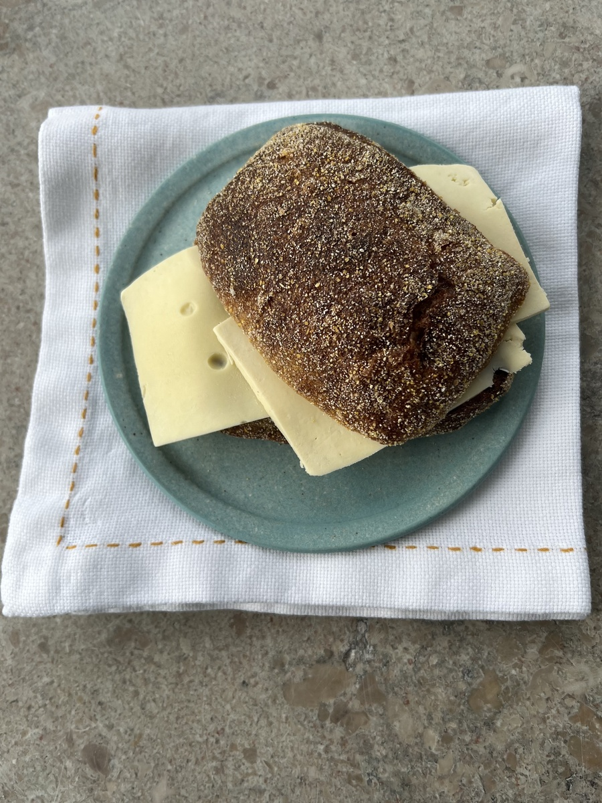

Pris på bolle med ost
Pris i kroner. Steder uden registreret pris er ikke med i diagrammet.
EN DATAUNDERSØGELSE · FREDERIKSBERG
Vi har undersøgt bagerier og caféer på Frederiksberg for at se, hvordan deres boller med ost klarer sig på pris og bedømmelse.
Se resultater ↓
UNDERSØGELSENS RESULTATER
Vi sammenligner pris og samlet BMO-bedømmelse for de undersøgte steder.
Pris i kroner. Steder uden registreret pris er ikke med i diagrammet.
Samlet BMO-score for hvert sted.
DATA OPDELT I KATEGORIER
Tabellen grupperer stederne efter ostetype og viser antal steder, gennemsnitlig BMO-score og gennemsnitspris.
| Ostype | Antal steder | Gns. BMO-score | Gns. pris |
|---|---|---|---|
| Indlæser data ... | |||
ALLE REGISTRERINGER
Her kan du se de enkelte steder, deres priser, bedømmelser og ostetyper.
| Bageri / café | Pris | BMO-score | Ostype | Anmeldelse |
|---|---|---|---|---|
| Indlæser data ... | ||||
UNDERSØGELSENS KONKLUSION
Konklusionen bliver opdateret, når dataene er indlæst.